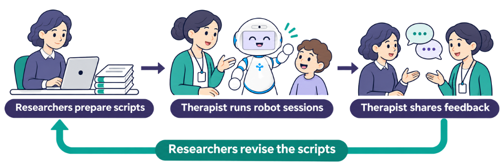
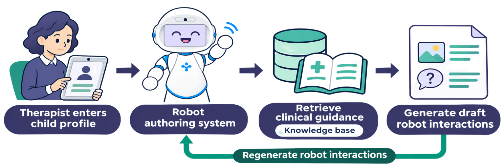
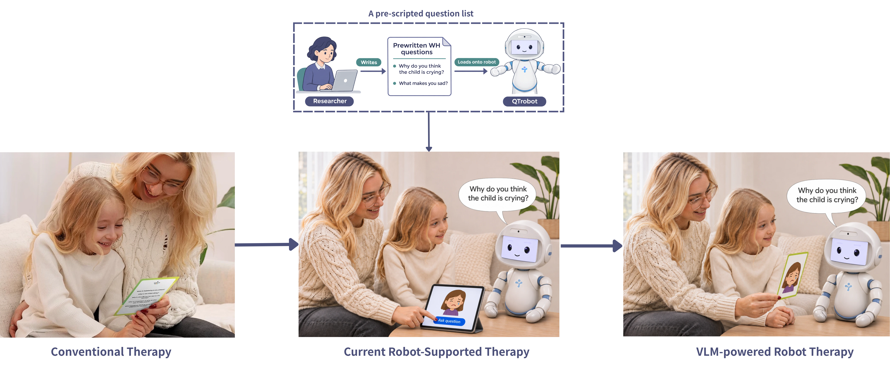
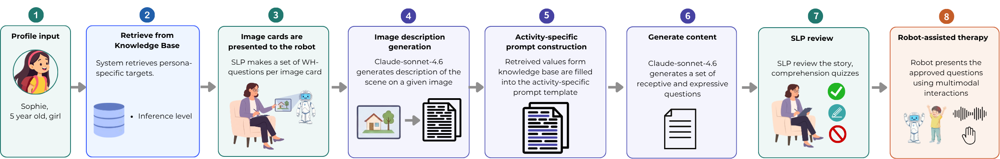
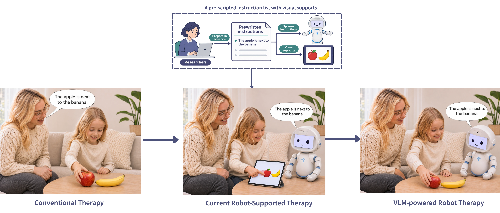
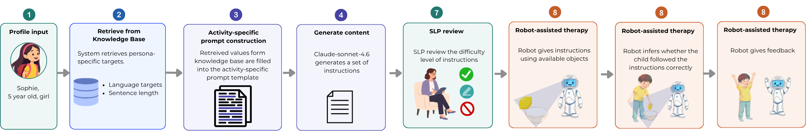
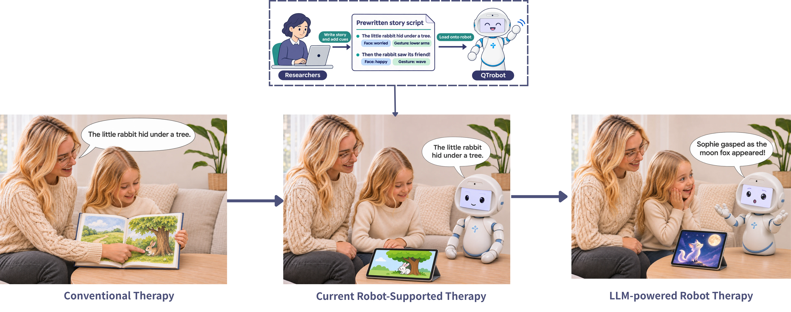
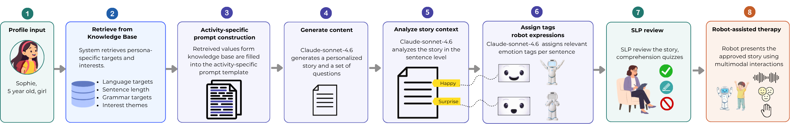

LLM- and VLM-powered prototype · In progress
Helping therapists design their own robot interactions
In our clinic deployment, a speech-language therapist could run robot activities independently. Researchers still prepared the robot’s scripts. I’m building an end-to-end authoring pipeline that gives therapists control over the robot interactions themselves, so they can tailor interactions to each child’s language goals, abilities, and interests.
My role · Project lead
How robot interactions are prepared
Researcher-scripted workflow

Researchers prepare all robot interactions in advance. The therapist runs sessions and shares feedback, which the researchers use to revise the scripts for future sessions.
View full sizeTherapist authoring prototype

The therapist enters a child profile on the tablet. The robot authoring system retrieves relevant guidance from a knowledge base informed by speech-language therapists and drafts robot interactions for the therapist to review. The therapist can regenerate the interactions through the authoring system.
View full sizeHow the workflow changes by activity
WH conversational cards (conventional -> current robot-support therapy -> VLM-powered robot therapy)

In conventional therapy, the therapist shows a picture card and asks a question like “Why do you think the child is crying?” In the current robot-supported workflow, the therapist taps a tablet button and robotq asks a question from a researcher-written list. With therapist authoring, the therapist shows the picture card to robot, the system drafts questions about the scene in the picture, and robot asks the questions.
View full size
The system describes a picture card and generates questions about the scene, such as “Where is the tree?” The therapist reviews the questions before robot presents them.
View full sizeFollowing instructions (conventional -> current robot-support therapy -> VLM-powered robot therapy)

In conventional therapy, the therapist gives the instruction and the child moves real fruit. In current robot-supported therapy, QTrobot reads a researcher-written instruction and the child moves the apple on a tablet using visuals the researchers prepared. In the VLM-powered workflow, the child follows robot’s instruction with real objects.
View full sizeVLM-powered robot pipeline

The system drafts instructions matched to the child’s language targets. QTrobot gives an approved instruction using objects in the room, checks the child’s response, and gives feedback.
View full sizeStory understanding

In conventional therapy, the therapist reads from a picture book. In current robot-supported therapy, QTrobot narrates a story that researchers wrote and marked with facial expression and gesture cues. A tablet shows the illustrations. In the LLM-powered prototype, robot narrates a story tailored to the child with generated cues for its expressions and gestures.
View full sizeStory understanding pipeline

The system drafts a personalized story and comprehension questions. It assigns sentence-level emotion tags that guide robot’s gestures and facial expressions. The therapist reviews the story and questions before the robot presents them.
View full size